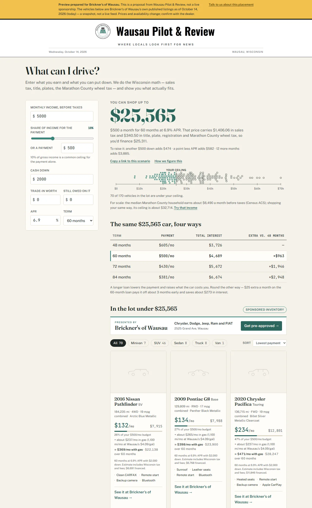
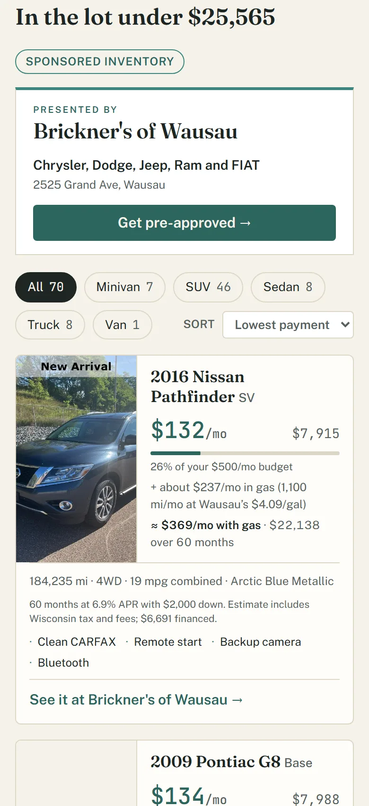
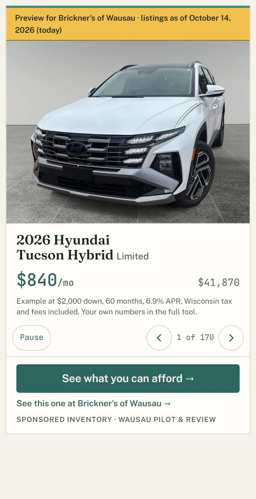

Sponsorship · sole sponsor
Your lot, inside the question every car buyer asks first.
What can I drive? is a Wausau Pilot & Review reader tool. A reader enters what they earn and what they can put down; the tool does the Wisconsin math — sales tax, title, plates, the Marathon County wheel tax — and shows which vehicles on one dealer’s lot actually fit, each with its own monthly payment. That lot is the sponsor’s, rebuilt from their inventory feed every day.
Two placements, one sponsor
The full tool lives on its own page and inside articles. A compact slideshow of the lot sits in the sidebar on article pages and sends readers into it.



- The lockup
Logo, name and tagline on the inventory panel, and a “Get pre-approved” button to the sponsor’s own financing page.
- Every card links to the car
Each vehicle under a reader’s ceiling links to that vehicle’s page on the sponsor’s site, tagged so the visits show in the sponsor’s own analytics.
- The sidebar slideshow
Newest vehicles first, with an example payment, on article pages across the site. Its button opens the full tool.
- A monthly report
Clicks by vehicle and body type, the price bands readers arrive in, pre-approval clicks, and what the sidebar sent in. See the sample.
- A live lot
The sponsor’s inventory feed is ingested and the page rebuilt every day; sold vehicles leave, new ones arrive.
- Sole sponsor
One dealership on the tool. The placement is not shared and not rotated.
Who sees it
Wausau Pilot & Review is Marathon County’s independent nonprofit newsroom, published in English, Spanish, Hmong and Vietnamese. Readers build it into their routine and come back: a daily habit, not a drive-by click.
Source: Wausau Pilot & Review 2026–2027 media kit.
How it stays honest
- The calculator is neutral and the math is the newsroom’s. The sponsor’s prices are the sponsor’s; every other number — the ceiling, each payment, Wisconsin tax and fees, fuel — is computed by Wausau Pilot & Review.
- Every payment shown carries the terms that produce it, as Regulation Z asks of a payment in an advertisement.
- The inventory panel is the only sponsored surface, and it is labeled. The newsroom writes no copy praising a vehicle; the feed’s own data speaks.
- Sponsorship buys the placement, not coverage. Wausau Pilot & Review’s reporting is independent of its sponsors.
- A preview for a prospect runs on a dated snapshot of their published listings and says so on the page; a live sponsorship runs on their feed.
See it
- The preview on Brickner’s of Wausau’s lot — 170 of their 197 listings as of October 14, 2026
- The tool on the demo lot — what a reader sees with no sponsor named
- The sidebar slideshow
- The sample monthly report — illustrative numbers, the shape of the real one
Wausau Pilot & Review may accept or decline any advertisement or sponsorship. The previews above were built from Brickner’s of Wausau’s own published listings on October 14, 2026 as a proposal to them; the tool itself runs on a demo lot until a dealer signs. Wausau Pilot & Review · 715-301-5539.